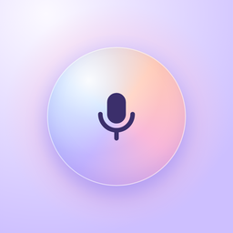

Atualizados em 14 de novembro de 2026
Em resumo: o Tasqueo funciona com um plano pago (anual, mensal ou para sempre). Os pagamentos, as renovações e os reembolsos são tratados pela Apple. Os teus dados são teus e ficam no teu iPhone.
O Tasqueo é licenciado, não vendido. Aplica-se o Contrato de Licença Padrão da Apple para Aplicações Licenciadas. Estes termos complementam esse contrato com as condições específicas dos planos do Tasqueo.
Os preços acima são os da data desta página. Vale sempre o preço mostrado na App Store antes de confirmares a compra, que pode variar com o país e os impostos.
O plano anual inclui 7 dias grátis para novos subscritores elegíveis, uma vez por Apple ID. Se não cancelares pelo menos 24 horas antes do fim do teste, a subscrição começa e é cobrada. Quando é oferecido, a parte não utilizada do teste perde-se se subscreveres um plano durante o teste.
É uma compra única, associada ao teu Apple ID, que podes restaurar em "Restaurar compras" noutro dispositivo com o mesmo Apple ID. "Para sempre" significa durante o tempo em que o Tasqueo for disponibilizado e suportado para o teu dispositivo. Não garante a manutenção da aplicação por tempo indefinido.
Os pagamentos e reembolsos são tratados pela Apple. Para pedir um reembolso, usa reportaproblem.apple.com. O programador do Tasqueo não processa pagamentos nem reembolsos. Os teus direitos legais como consumidor não são afetados.
Para usar o Tasqueo é necessário um plano ativo ou um teste gratuito em curso. Sem plano ativo, as funções da aplicação ficam bloqueadas. Os teus dados mantêm-se no iPhone e podes exportá-los a partir do ecrã de subscrição.
As tuas tarefas são tuas. Ficam no teu dispositivo, como descrito na Política de Privacidade. És responsável por manter cópias de segurança.
Usa o Tasqueo de acordo com a lei. Não tentes contornar o pagamento nem alterar a aplicação, nem fazer engenharia inversa, na medida em que a lei o proíba.
A transcrição de voz e a organização das tarefas são automáticas e podem errar. Revê sempre as tarefas antes de as guardar. Não uses o Tasqueo como único meio para lembretes críticos, por exemplo de saúde ou de segurança. A aplicação é fornecida "tal como está", sem garantia de funcionamento ininterrupto ou sem erros. Na medida permitida por lei, o programador não responde por perdas indiretas. Nada nestes termos limita direitos que a lei garanta ao consumidor.
Podemos atualizar estes termos, e a data no topo indica a última versão. As alterações não afetam o período já pago.
Abre um tópico em github.com/franciscoesanto96-netizen/tasqueo-legal/issues. Os tópicos são públicos, por isso não incluas dados pessoais.
Last updated: 14 November 2026
In short: Tasqueo works with a paid plan (annual, monthly or lifetime). Payments, renewals and refunds are handled by Apple. Your data is yours and stays on your iPhone.
Tasqueo is licensed, not sold. Apple's Standard Licensed Application End User License Agreement applies. These terms supplement that agreement with the specific conditions of Tasqueo's plans.
The prices above are those at the date of this page. The price shown in the App Store before you confirm the purchase always prevails, and it may vary by country and taxes.
The annual plan includes a 7-day free trial for eligible new subscribers, once per Apple ID. If you do not cancel at least 24 hours before the trial ends, the subscription starts and you are charged. Where offered, any unused portion of the trial is forfeited if you purchase a plan during the trial.
It is a one-time purchase tied to your Apple ID, which you can restore with "Restore purchases" on another device using the same Apple ID. "Lifetime" means for as long as Tasqueo is made available and supported for your device. It does not guarantee that the app is maintained indefinitely.
Payments and refunds are handled by Apple. To request a refund, use reportaproblem.apple.com. Tasqueo's developer does not process payments or refunds. Your statutory consumer rights are not affected.
To use Tasqueo you need an active plan or a free trial in progress. Without an active plan, the app's features are locked. Your data stays on the iPhone and you can export it from the subscription screen.
Your tasks are yours. They stay on your device, as described in the Privacy Policy. You are responsible for keeping backups.
Use Tasqueo in accordance with the law. Do not try to bypass payment, modify the app, or reverse engineer it, to the extent that the law forbids it.
Speech transcription and task organization are automatic and may be wrong. Always review tasks before saving them. Do not rely on Tasqueo as the only means of critical reminders, for example for health or safety. The app is provided "as is", with no guarantee of uninterrupted or error-free operation. To the extent permitted by law, the developer is not liable for indirect losses. Nothing in these terms limits rights that the law guarantees to consumers.
We may update these terms, and the date at the top shows the latest version. Changes do not affect a period you have already paid for.
Open an issue at github.com/franciscoesanto96-netizen/tasqueo-legal/issues. Issues are public, so please do not include personal data.